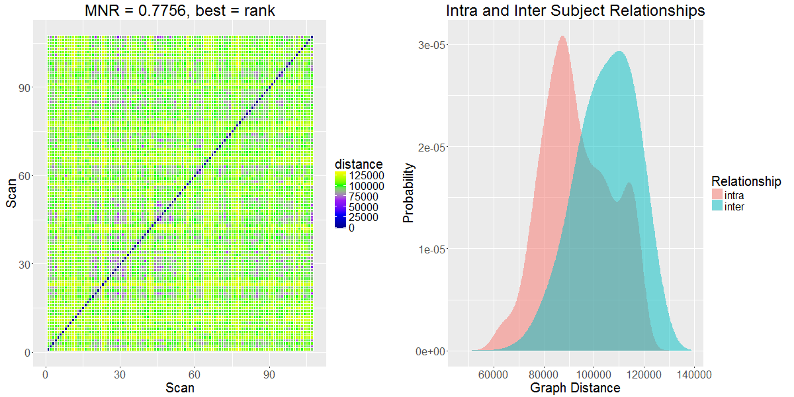
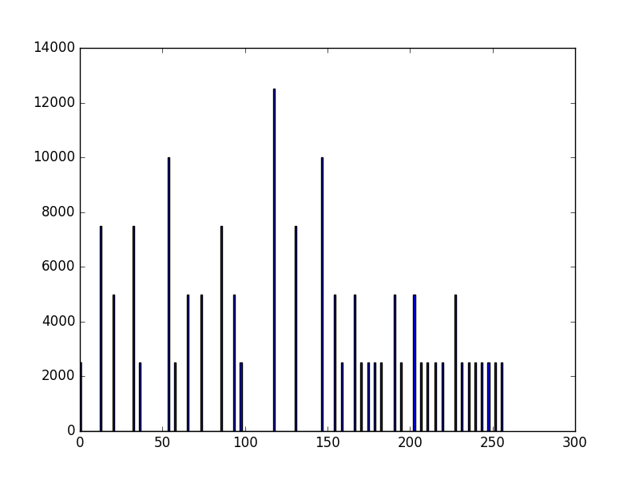
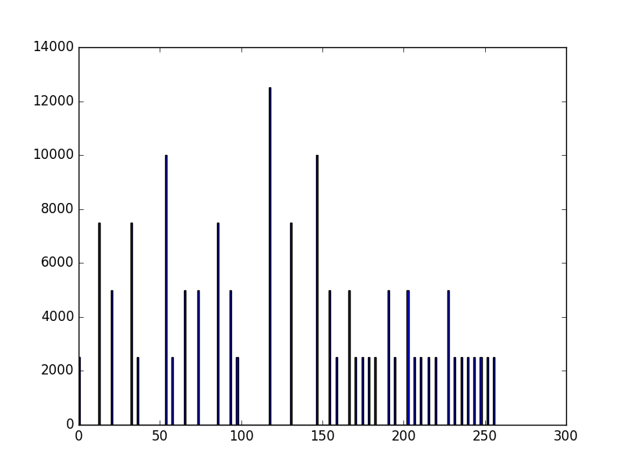

Design Team 0 Slides
Eric Bridgeford, Albert Lee, Eric Walker
FNGS pipeline leg overview
Eric Bridgeford
Week's Accomplishments
- Implemented Linear and Quadratic Drift removal (using CPAC methods)
- Finished a pipeline and analyzed for FNIRT brains (compared ts to kf-ts)
- Decided AGAINST smoothing
Results for Pipeline
- Note: first version of pipeline implementing FNIRT
HNU1, no kalman filter

NKI, no kalman filter

DC1, no kalman filter

DC1, kalman filter

BNU1, no kalman filter

BNU1, kalman filter

What this Means
- With some randomly chosen DLM, Kalman filtering helps
- Pessimistic: might not actually work, since this DLM is completely arbitrary
- Need to find how to optimize the DLM, so that when we filter we are doing it right
Quality Control for fMRI graphs
- Goal: create a repo for fMRI graphs that demonstrates between-dataset variances
- Similar to neurodata/dataset-variance, but those metrics don't really apply
- Decide which metrics to include
- Want to be able to run all of our discriminability analyses, and adds another layer of benchmarking for each pipeline as we improve
Things to do this week
- Merge ndmg-master into ndmg-eric-dev
- Run conversions to binary files from HCP dataset
- Figure out top n-component extraction for our pipeline
- Make R style guide and distribute ASAP
Autoregression on Timeseries
Eric Walker
Default parameters
.jpeg) dlm(FF=1, GG=1, V=0.8, W=0.1, m0=0, C0=1e7)
R^2 = -7.56
dlm(FF=1, GG=1, V=0.8, W=0.1, m0=0, C0=1e7)
R^2 = -7.56
MLE
dlm(FF=0.3039547, GG=2.7184272, V=2.6155451, W=0.7186114, m0=0.4027390, C0=0.6656987)
R^2 = -3.75
MLE
dlm(FF=1, GG=1, V=0.8, W=300, m0=0, C0=1e7)
R^2 = -2.50
Thoughts
- Need better prediction model
- Better R^2 value only caused by scattered points
Javascript Image Analysis
Albert Lee
Sample Webpage Example for Clarity
Fear199 histogram equalization demonstration
Attempt at proving histogram equalization works
Original subimage:
52 55 61 66 70 61 64 73
63 59 55 90 109 85 69 72
62 59 68 113 144 104 66 73
63 58 71 122 154 106 70 69
67 61 68 104 126 88 68 70
79 65 60 70 77 68 58 75
85 71 64 59 55 61 65 83
87 79 69 68 65 76 78 94
Equalized subimage:
0 12 52 93 145 52 72 165
64 32 12 214 234 202 129 157
56 32 117 238 250 226 93 165
64 20 153 242 255 230 145 129
97 52 117 226 246 210 117 145
190 85 36 145 178 117 20 170
202 153 72 32 12 52 85 194
206 190 129 117 85 174 182 218
Original image vs Wikipedia's equalized image

Original image vs Wikipedia's equalized image
 

Wikipedia's equalized image vs My version

Wikipedia's equalized histogram vs My version

Conclusion
- Error in the 0 pixel range - unnecessary shift
- Other values match up nicely
Sample Webpage Example for Clarity
{kind=link}
{kind=link}
{kind=link}
{kind=link}
{kind=link}